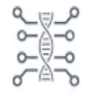
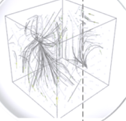
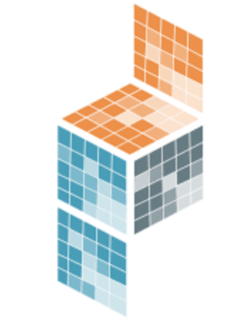

Nearly every scientist working in Python draws on the power of NumPy.
NumPy brings the computational power of languages like C and Fortran to Python, a language much easier to learn and use. With this power comes simplicity: a solution in NumPy is often clear and elegant.
| Quantum Computing | Statistical Computing | Signal Processing | Image Processing | 3-D Visualization | Symbolic Computing | Astronomy Processes | Cognitive Psychology |
| QuTiP | Pandas | SciPy | Scikit-image | Mayavi | SymPy | AstroPy | PsychoPy |
| PyQuil | statsmodels | PyWavelets | OpenCV | Napari | SunPy | ||
| Qiskit | Seaborn | SpacePy |
| Bioinformatics | Bayesian Inference | Mathematical Analysis | Simulation Modeling | Multi-variate Analysis | Geographic Processing | Interactive Computing |
|  |  | |||||
| BioPython | PyStan | SciPy | PyDSTool | PyChem | Shapely | Jupyter |
| Scikit-Bio | PyMC3 | SymPy | GeoPandas | IPython | ||
| PyEnsembl | cvxpy | Folium | Binder | |||
| FEniCS |
NumPy's API is the starting point when libraries are written to exploit innovative hardware, create specialized array types, or add capabilities beyond what NumPy provides.
| Array Library | Capabilities & Application areas | |
| Dask | Distributed arrays and advanced parallelism for analytics, enabling performance at scale. | |
| CuPy | NumPy-compatible array library for GPU-accelerated computing with Python. | |
| JAX | Composable transformations of NumPy programs: differentiate, vectorize, just-in-time compilation to GPU/TPU. | |
 |
Xarray | Labeled, indexed multi-dimensional arrays for advanced analytics and visualization |
|  | Sparse | NumPy-compatible sparse array library that integrates with Dask and SciPy's sparse linear algebra. |
| PyTorch | Deep learning framework that accelerates the path from research prototyping to production deployment. | |
| TensorFlow | An end-to-end platform for machine learning to easily build and deploy ML powered applications. | |
| MXNet | Deep learning framework suited for flexible research prototyping and production. | |
| Arrow | A cross-language development platform for columnar in-memory data and analytics. | |
| xtensor | Multi-dimensional arrays with broadcasting and lazy computing for numerical analysis. | |
 |
XND | Develop libraries for array computing, recreating NumPy's foundational concepts. |
| uarray | Python backend system that decouples API from implementation; unumpy provides a NumPy API. | |
|  | TensorLy | Tensor learning, algebra and backends to seamlessly use NumPy, MXNet, PyTorch, TensorFlow or CuPy. |
NumPy lies at the core of a rich ecosystem of data science libraries. A typical exploratory data science workflow might look like:
NumPy forms the basis of powerful machine learning libraries like scikit-learn and SciPy. As machine learning grows, so does the list of libraries built on NumPy. TensorFlow’s deep learning capabilities have broad applications — among them speech and image recognition, text-based applications, time-series analysis, and video detection. PyTorch, another deep learning library, is popular among researchers in computer vision and natural language processing. MXNet is another AI package, providing blueprints and templates for deep learning.
NumPy is an essential component in the burgeoning Python visualization landscape, which includes Matplotlib, Seaborn, Plotly, Altair, Bokeh, Holoviz, Vispy, and Napari, to name a few.
NumPy's accelerated processing of large arrays allows researchers to visualize datasets far larger than native Python could handle.